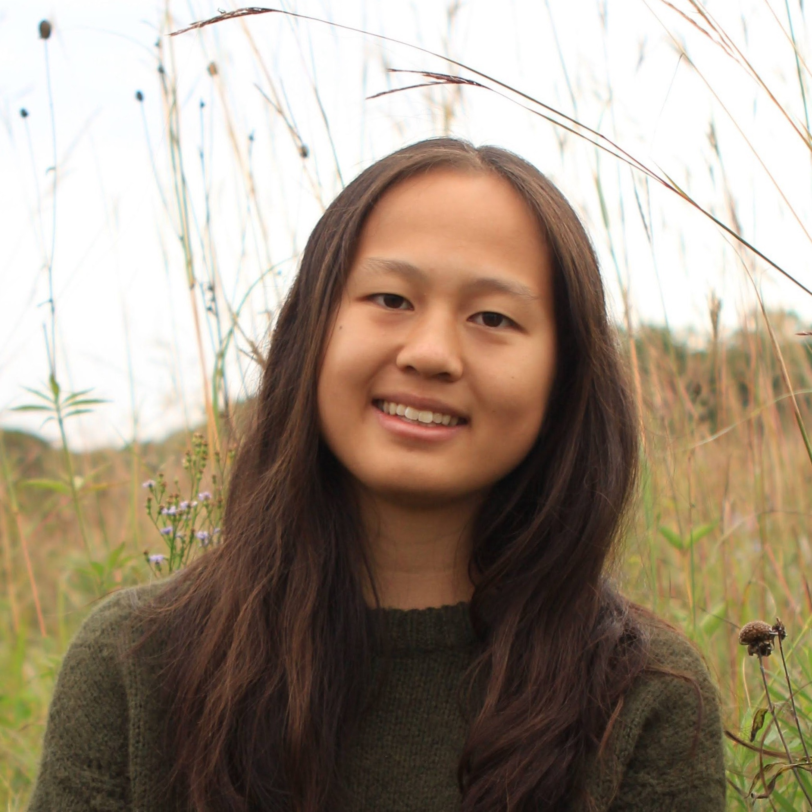

About
Hello! I'm a computer science student interested in computational biology, software engineering, and data analytics. In my free time, I like to run and bake at equally low frequencies.
Research Interests
- Computational biology
- Human–computer interaction
Education
B.S. in Computer Science
Carnegie Mellon University, May 2028
Projects
Coursework
Functional Programming, Parallel Data Structures and Algorithms, Computer Systems, Probability and Computing, Linear Algebra, Theoretical Computer Science